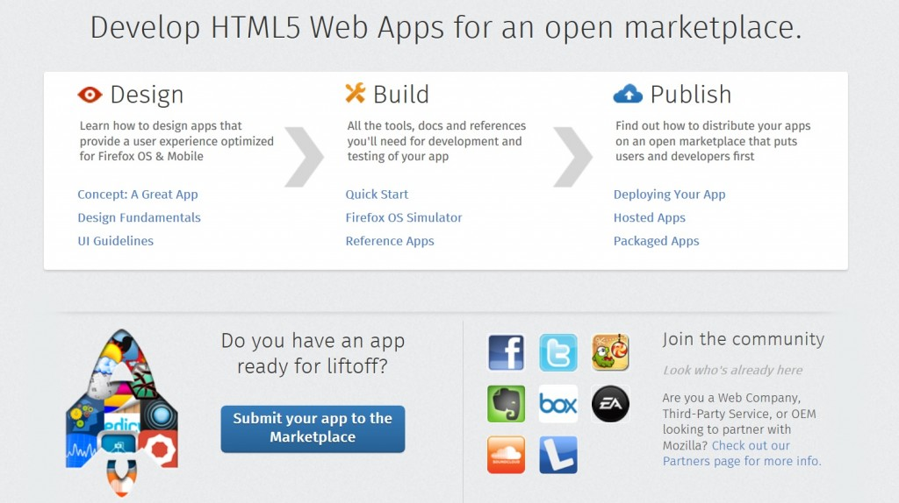

你是熱血的 App 開發者，而且早已累積許多 App 準備大展身手嗎？在將自己的 App 提交到 Firefox Marketplace 時，當然該確認是否已經滿足了相關條件。本文則提供檢查項目與相關資訊的連結。

提交作業檢查清單
要完成 Firefox Marketplace 的提交程序，你需要：
針對封裝式 (Packaged) App
- 將 App 封裝為 zip 檔案，並將 manifest 檔案至於根目錄中。
- 於 manifest 檔案中指定 launch_path 。
針對架設/托管式 (Hosted) App
- 可架設/托管 App 的網站。進一步資訊可參閱《Options for hosting your app》。
- App 內 manifest 檔案的網址。進一步資訊可參閱《App 的 Manifest 檔案》。
在將 App 提交到 Firefox Marketplace 之前，可使用「測試應用程式驗證」工具來測試 manifest 檔案的正確性。
注意：你會在「應用程式管理員 (App Manager)」看到「manifest」中文翻譯為「安裝資訊檔」。
針對所有 App (必備)
架設/托管式、封裝式 App 的共通必要條件：
- App 的 manifest 檔案必須有 App 的相關敘述，最多可達 1024 個字元。在 App 上傳程序的 Step 3 中，亦必須預先填入 Marketplace 的「Description」欄位，並可後續進行編輯 (但如果是 Marketplace 的說明欄位，則沒有字元數的限制)。
- 需提供 128 x 128px 的縮圖圖示，以於 Marketplace 上呈現。此為固定的圖示尺寸。若要進一步了解應如何將圖示加入 App 中，可參閱 manifest 圖示。
- 需提供 App 截圖，至少為 320 x 480px (可參閱 Marketplace 截圖準則以進一步了解。若要添增或變更截圖，可於 Step 4 中更新之)。
- 提供 App 支援服務的電子郵件位址 (可於 Step 3 時輸入)。
針對付費 App 或應用程式內付款 (In-app payments)
- 你必須找好付款服務商、銀行帳戶明細 (如帳號、SWIFT 代號、地址明細)、公司明細 (如 VAT 編號、公司統編、開業日期)。
- 如果 App 使用 In-app payments，確認已於 manifest 檔案中提供了 origin。
針對所有 App (非必備)
架設/托管式、封裝式 App 的建議條件：
- 最多可提交 6 張截圖來呈現 App 的主畫面。最好是涵蓋不同裝置規格的 App 截圖，且各有尺寸限制： 手機：建議 320 x 480px 或相對應的倍數。
- 平板電腦：建議 1024 x 768px 或 1280 x 800px。
- 桌上型電腦：建議 1280 x 800px 或 1440 x 900px。
- 其他尺寸的圖示應透過 manifest 檔案指定，以於其他平台/網頁內容達到最佳顯示效果： 60 x 60px 圖示可於裝置螢幕上顯示。
- 32 x 32px、90 x 90px、120 x 120px、256 x 256px 圖示，可於不同平台達到最佳顯示效果，如 Windows 7 與 Android。
- App 及其支援服務首頁的網址。根據你自己的需要，可為相同或不同的網址 (於 Step 3 時輸入)。
- 其他manifest 檔案的選填欄位。目前有 name、description、icons 為必要欄位，另有許多選填欄位，例如： 如果你要提供多語言版本的 App，就必須填入 locales 的資訊。
- 如果有 locales 欄位，就必須一併提供 default_locale 欄位。
- 如果要在 App 中使用特定裝置的 API 或 Web Activity，也必須在 manifest 檔案中提供相關 App permissions 或 activities 欄位。
另外還有……
……你應該：
- 在 Marketplace 審核通過你的 App 之後，預設將立刻讓 App 上架。如果你不想讓 App 立刻上架，則在提交 App 時要取消勾選「 Publish my app in the Firefox Marketplace as soon as it’s reviewed 」(於 Step 2 時勾選)。
- 可參閱 Marketplace 審查準則 (Step 1)。
Mozilla 開發者社群網站 (MDN) 原文連結：Submission checklist
你也可閱讀中文版的《提交作業檢查清單》；並參閱 MDN 上的更多 Firefox OS 或 Marketplace 相關文章。
原文文章將不定期有所增刪，我們也將儘快更新中文版本，以期讓開發者能隨時看到最新的內容。